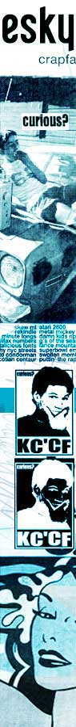

| |
PACKING IN THE GOODNESS
| |
Growing out of the fertile soil that was Recovery magazine (based on the cult-ish ABC TV music show), ESKY mag held aloft the flag of teen-oriented art culture until it met an early demise in August 2001.
| |
And as was the case with noise's 25 or so other projects, there was no shortage of submitted material to ESKY. The call-out sought DIY and fanzine-type art and writing from keen under-25ers from around Australia, anything with a self-publishing bent really. The objective was, like the many other noise-affiliated magazines now available, to provide an energetic supplement reflecting the thoughts and expressions of young people.
noise Print Producer Tracey Grimson reflects, "Terraplanet Publishing was really keen to hook up with noise for a DIY art supplement in ESKY's October issue. However, during the course of the call-out period, ESKY went to that great publishing house in the sky."
"But, rather than losing the cool ESKY work altogether, and in keeping with the project's DIY spirit, we took some of the great submissions and inserted them into other print projects, as well as featuring some of the artists on the noise site of course," says Grimson.
So as kind of a salute to the dearly departed, we not only posted these great works within other projects, we went right ahead and created this feature and a dedicated ESKY page to proudly display the artists and their works, and to set you in the right direction when searching for more ESKY-related stuff.
"You'll actually find ESKY project artists in 24 HOURS magazine, HQ, JUICE and others," adds Grimson, "also appearing across noise.net.au on a regular basis. In the end it all worked out for the best, really."
For instance, you'll notice that one of the first feature stories in HQ magazine's noise supplement profiles a bunch of prominent Australian fanzines, like Keychain, Speak-easy, Psychobabble and Personality Liberation Front (PLF), made by writers and self-publishers through frustrations with the limitations and inaccessability of mainstream print media.
Then there's the three-page spread of album artworks, flyers and posters that appears on page 15 of the noise supplement in JUICE. While some of this particular art represents or advertises imaginary events or bands, some are actual professionally finished works - showing both sides of the creative spectrum.
Just when you thought you had seen the best examples of DIY publishing in noise's ANTHOLOGY, the fine works of the ESKY project are out there for you to peruse right now. Off to the news stand!
Return to the ESKY homepage
(Psst... we reckon you'll also be interested in the ANTHOLOGY, HQ and JUICE Projects)
|
|
|